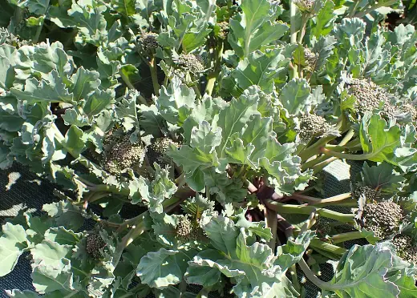

Starters & snacks · Popular in South East England and South West England
Sea kale with hollandaise
Sea kale with hollandaise is made with wild sea kale, a favourite in South East England and South West England.

How do you make sea kale with hollandaise?
Steamed young shoots with hollandaise, a Victorian delicacy.
Wild ingredients
- Sea kale (Crambe maritima): in season March to May
Watch the recipe

Video: English Heritage on YouTube